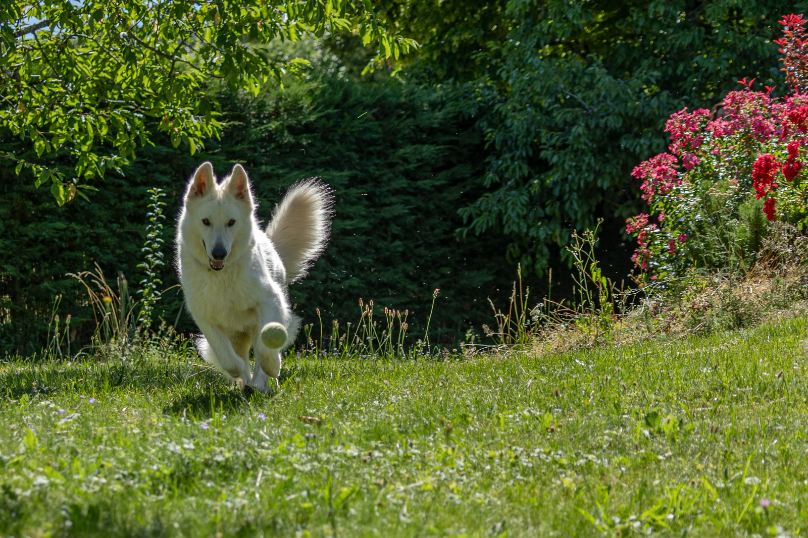
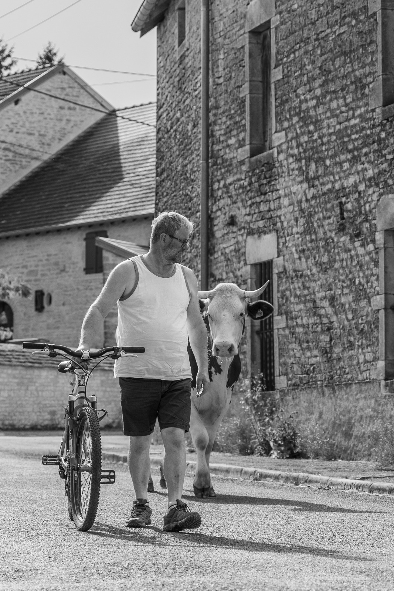
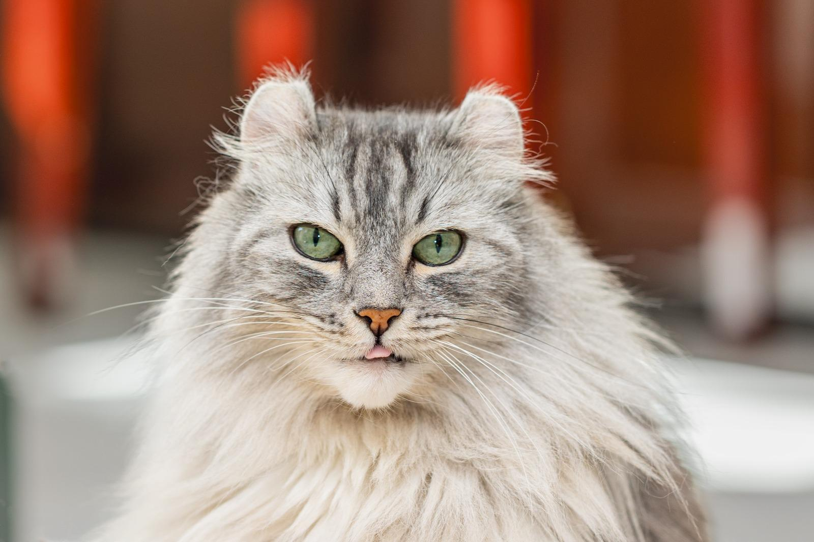
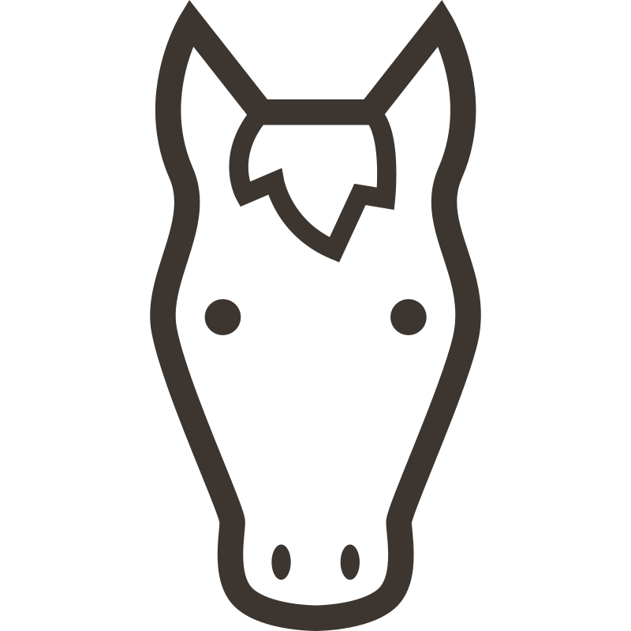
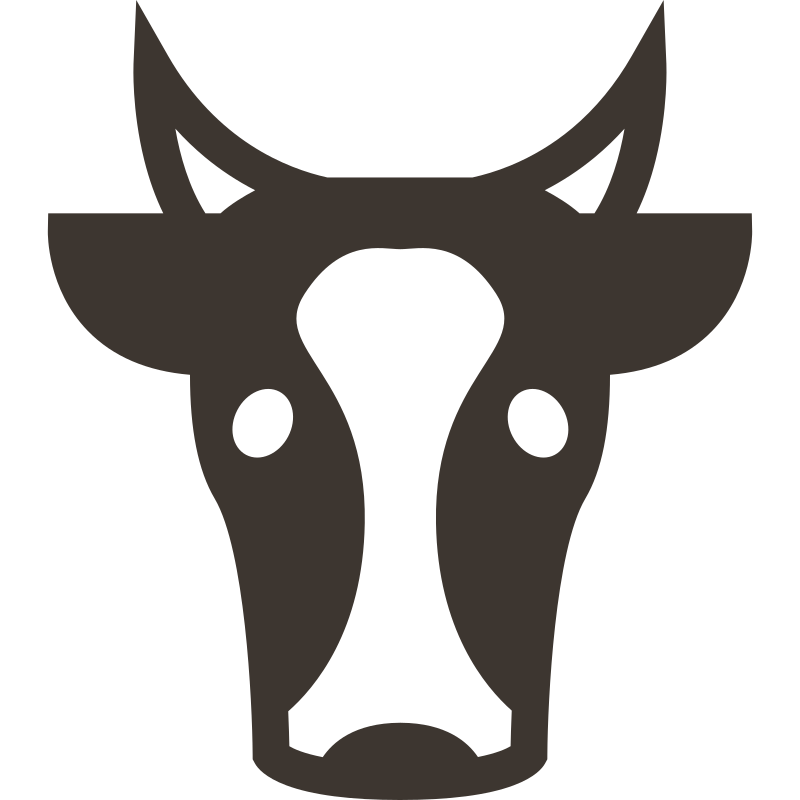

CAPTURER L'ÉMOTION
Portraits d'animaux, seuls ou avec ceux qui les aiment.



Chaque regard raconte une personnalité.
Chaque regard raconte une histoire.
Chaque lien raconte une personnalité.
Chaque lien raconte une histoire.

CHEVAUX
ANIMAUX DE FERME